第25天：汇编器的词法分析
第25天：汇编器的词法分析
回顾一下从第一节课到现在我们都做了什么？
- 词法分析
- 语法分析
- 语义分析
- 中间代码生成
- 中间代码的优化
- 把中间代码翻译成汇编代码
如果读者精力有限，到这里就可以告一段落了。
上面的步骤 1~4 实现了编译器的前端，步骤 5 属于编译器的中端。如果你看懂了我的大部分代码，相信你对编译原理不再云里雾里了。
对于学有余力的读者，我们可以“百尺竿头更进一步”：实现一个简易的后端。
编译器后端的主要任务是将中间表示转换为目标平台的机器代码。
这个任务又可分成 2 个步骤，第一是把中间代码翻译成汇编代码，我们已经实现了；第二是把汇编代码转换为目标文件。
如何把把汇编代码转换为目标文件呢？
答案就是实现一个汇编器。如果把汇编器看成是汇编语言的编译器，那么我们要做是：
- 汇编器的词法分析
- 汇编器的语法分析
- 汇编器的语义分析
- 指令生成
- 目标文件生成
步骤 1~2，和之前的方法是一样的，可以说是“换汤不换药”。
步骤 3 包括符号表管理。
步骤 4 比较硬核，需要了解 x86 机器码的格式；
步骤 5 也比较难啃，需要了解 .o 文件的结构。
读者不用害怕，我会尽己所能为您讲明白。
接下来，我们要完成汇编器的词法分析。
需要说明的是，我们要实现的汇编器，功能比较简单，只能汇编 csub 生成的汇编代码。
汇编器的词法记号
还记得什么是词法记号吗？词法记号是源代码经词法分析后生成的最小语义单元，也就是说不能再分了。
根据 csub 生成的汇编代码，我们的汇编器要支持哪些词法记号呢？
汇编代码包括数据段、代码段。数据段里面有 section, global, extern, db, dd 等关键字,还有标识符，例如 .text, .data；
另外，对于数据的定义，肯定少不了常量，包括数字常量、字符串常量或者字符常量；
代码段里面有 global, extern 等关键字，还有以冒号结尾的标识符，标号，各种指令（指令助记符、寄存器名字）
另外还有界符，例如冒号、逗号、分号（用于注释）、方括号等。
把上面的信息归纳一下，如下面的表格
| 类型 | 词法记号 |
|---|---|
| 标识符 | 以. @或大小写字母开头 |
| 常量 | 数字（仅支持十进制）、字符（以单引号包裹）、字符串（以双引号包裹） |
| 关键字 | global, extern, section, db, dw, dd, times, byte, word, dword |
| 关键字（指令助记符） | mov,movsx,movzx,add,sub,imul,cmp,lea, call,int,idiv,neg,jmp,je,jne,jge,sete,setne,setg,setge,setl,setle, push,pop,ret,cdq |
| 寄存器的名字 | al,cl,dl,bl,eax,ecx,edx,ebx,esp,ebp,esi,edi |
| 界符 | 正号，负号，逗号，冒号，分号，方括号，换行 |
| 其他 | ASS_INVALID；ASS_FILE_END；ASS_COMMENT |
有几点要注意：
1、和 C 语言不同，汇编指令以换行作为结束，你不能在同一行书写 2 条汇编指令；
2、其他包括无效的记号(ASS_INVALID)、文件结束(ASS_FILE_END)、还有注释（ASS_COMMENT）；
3、虽然生成汇编指令的时候用不上 byte, word, dword 这些关键字，但是做窥孔优化的时候可能用到；
和之前一样，我们用枚举类型记录所有词法记号。
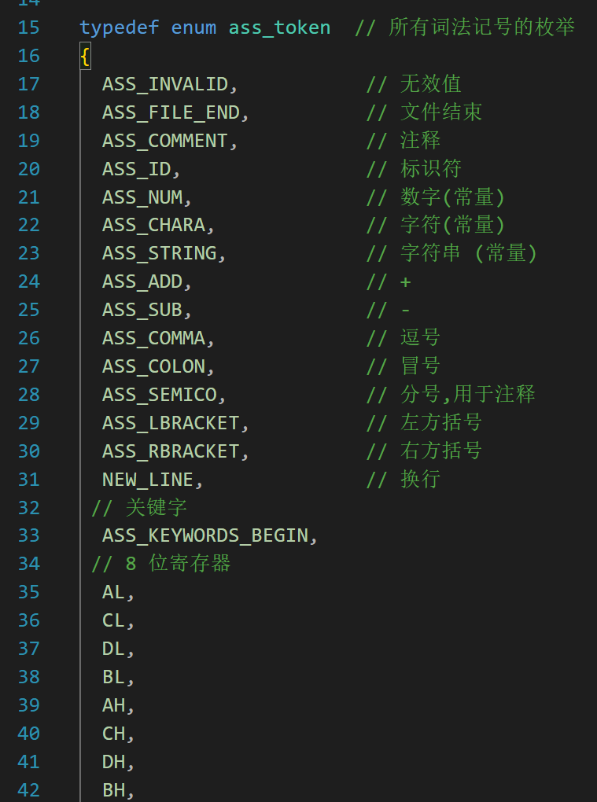
代码仅截取部分。
需要注意的是，第 33 行，是我专门加的，为了记录关键字的开始位置。后面会讲为什么这么做。
扫描器
在做词法分析之前，肯定需要一个扫描器，我们之前写的那个改一改就可以用。
不过我打算重新写一个。这次打算把和扫描有关的全局变量都封装到一个结构体里面，例如下面这样。
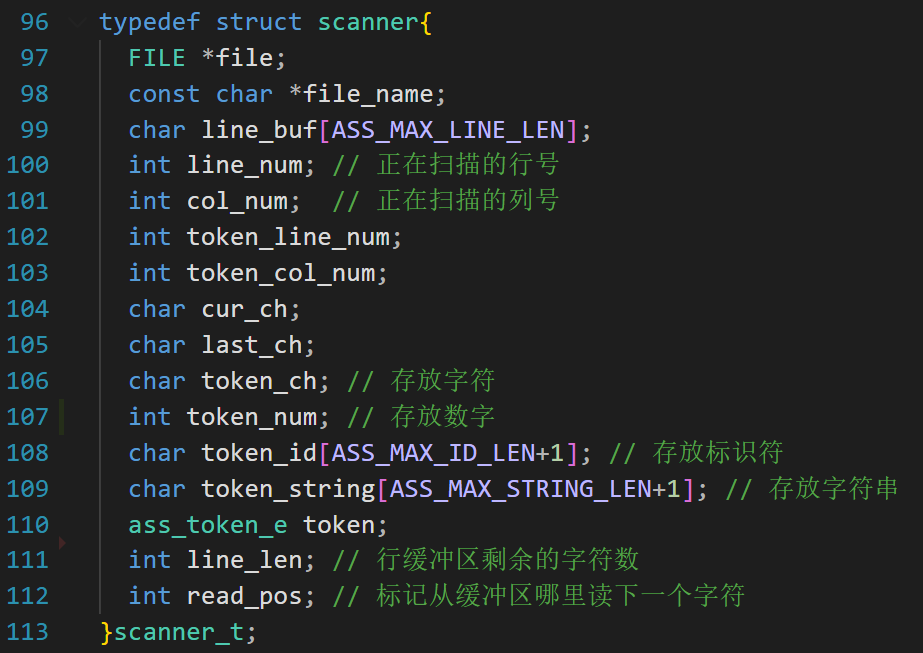
扫描器的初始化函数是：
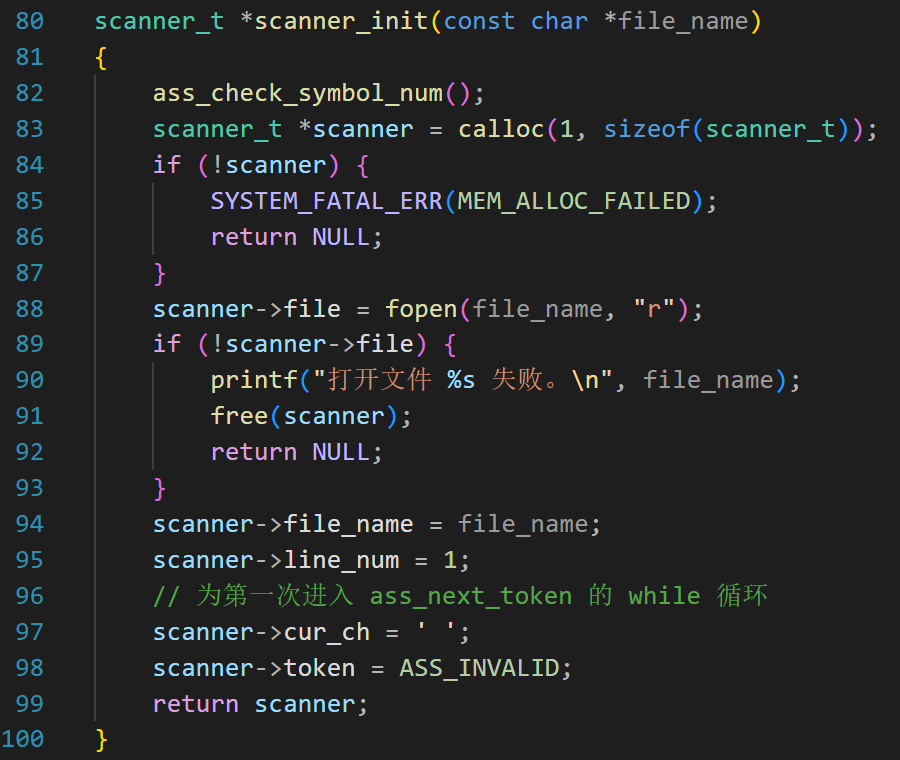
第 82 行马上会讲。
第 88 行，以只读的方式打开文件
第 94 行设置文件的名字
第 95 行让行号等于 1
第 96 行把当前字符设置为空格。
第 98 设置当前的词法记号为无效符号。
第 82 行的 ass_check_symbol_num 函数如下
1 | |
这里面有 2 个断言。
ASS_TOKEN_CNT 表示所有词法记号的个数。
1 | |
因为我们还有两个数组，和这里定义的词法记号（或者其中的关键字）一一对应。
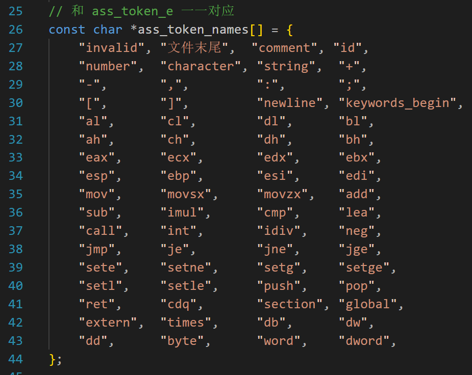
ass_token_names 数组里面都是字符串，从第一个字符串到最后一个字符串，和 enum ass_token 是一一对应的关系。
有时候我们增加了词法记号或者删除了词法记号，这个数组也要跟着修改，如果忘了修改就会出问题。
assert(ASS_TOKEN_CNT == ass_token_names_cnt);
就是为了保证 ass_token_names 的字符串个数和 ass_token_e 定义的词法记号个数一样，避免出现仅修改一处而忘记修改另一处的情况。
因为枚举默认是从 0 开始的，所以 ASS_TOKEN_CNT 就表示了整个列表有多少个枚举成员。
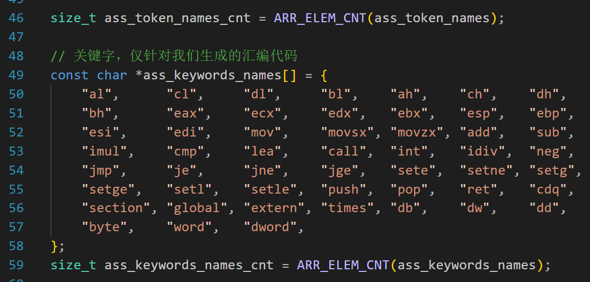
ass_token_names_cnt 的值是靠第 46 行的宏 ARR_ELEM_CNT 计算的。
这个宏很简单，我们之前多次使用过多次。
1 | |
第 59 行，ass_keywords_names_cnt 也是这样计算的。
然后我们再看第二句断言。
1 | |
代码第 49 行又是一个数组，里面是关键字的名字。
同理，关键字的名字和 ass_token_e 的一部分是一一对应的。
准确讲是从 ASS_KEYWORDS_BEGIN 后面那个成员开始，到 ASS_TOKEN_CNT 之前的成员结束。
要计算有多少个关键字，可以用(ASS_TOKEN_CNT - ASS_KEYWORDS_BEGIN - 1) 表示。
如果在 ass_token_e 中增加了关键字，数组 ass_keywords_names 也要跟着修改。
第二句断言就是为了保证数组 ass_keywords_names 和 ass_token_e 中的关键字一一对应，避免出现仅修改一处而忘记修改另一处的情况。
接下来看看扫描的函数：
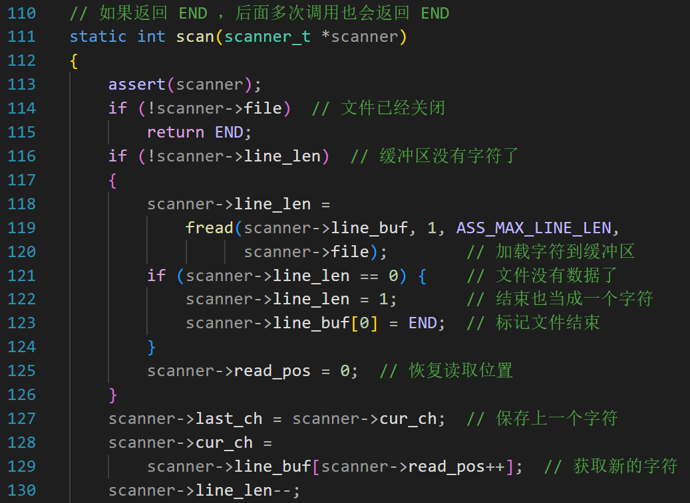
为了叙述方便，
第一次调用 scan 函数的时候，因为 scanner->line_len 是 0（扫描器初始化调用了 calloc 函数，会把这个字段清零）
所以执行第 119~120 行，读 ASS_MAX_LINE_LEN（定义为 80）个字符到 scanner->line_buf 中；
假设读取成功，fread 的返回值是 80；
然后执行第 125 行， scanner->read_pos = 0；
第 128 行，scanner->cur_ch 被赋值为 scanner->line_buf[0]; scanner->read_pos 的值变成 1；
下次调用 scan 函数，scanner->cur_ch 被赋值为 scanner->line_buf[1]，scanner->read_pos 的值变成 2；
总之，每次调用 scan 函数，得到的字符在 scanner->cur_ch 中；
如果文件读到了末尾，scanner->cur_ch 的值是 END；
代码就分析到这里。
词法分析
轮子有了，可以做词法分析了。
最早我们学习词法分析的时候，用到了状态转换图。现在，依然是用状态转换图。
我们把注意力放在和编译器的词法分析不一样的地方，如果类似就不赘述。
标识符
我用的 NASM 的版本是 version 2.16.01
这个版本的 NASM 允许标识符以字母、下划线 _、问号 ?、点号 . 或 @ 符号开头。
标识符可以包含字母（a-z, A-Z）、数字（0-9）、下划线 _、美元符号 $、井号 #、艾特符号 @、波浪号 ~、点号 . 以及问号 ?。
但是，有些字符最好不用做标识符，例如
- 美元符号：$$
= 当前位置，$$$ = 当前段开始位置 #号，NASM 的预处理器指令可以选用#或%作为前缀。虽然官方文档更推荐使用 %（如 %define），但为了兼容 C 语言预处理器的习惯，NASM 也支持 #- 波浪号
~：波浪号是按位取反运算符 - 问号
？：问号主要用于未初始化数据的占位符
所以，除去$ # ~ ?，我们的汇编器可以识别的有效字符是：字母（a-z, A-Z）、数字（0-9）、下划线_ 、艾特符号 @、点号 .;
我们的汇编器要求标识符以字母、下划线_、艾特符号@、点号.开头；
需要注意：
- NASM 中，以点号 “.” 开头的标签是局部标签，但是为了降低难度，我们把以 “.” 开头的标签当成是普通标签；
.data.text等在 NASM 官方手册中被列为标准段名。但是我们把它们当作标识符来处理，在语法分析的时候，再识别为段名。
得到token
__ass_next_token 函数如下：
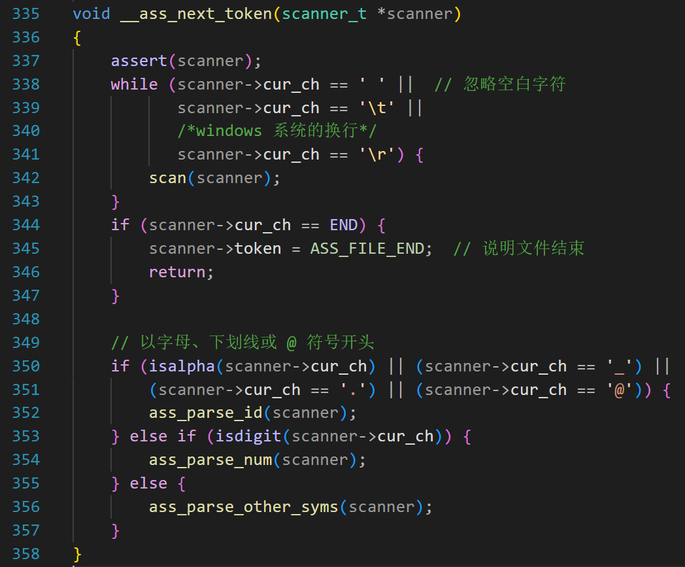
每调用一次，就得到一个 token;
如果文件结束，得到的是 ASS_FILE_END;
第 338~342，忽略空格、tab 等空白字符，注意，没有 ‘\n’;
第 344~346 行，如果遇到文件结束，返回。
第 350~350，如果遇到字符、下划线、点号或者 @，说明遇到了标识符，从状态 1 进入状态 2，调用 352 行的 ass_parse_id 做进一步的解析。
识别标识符的状态转换图如下：
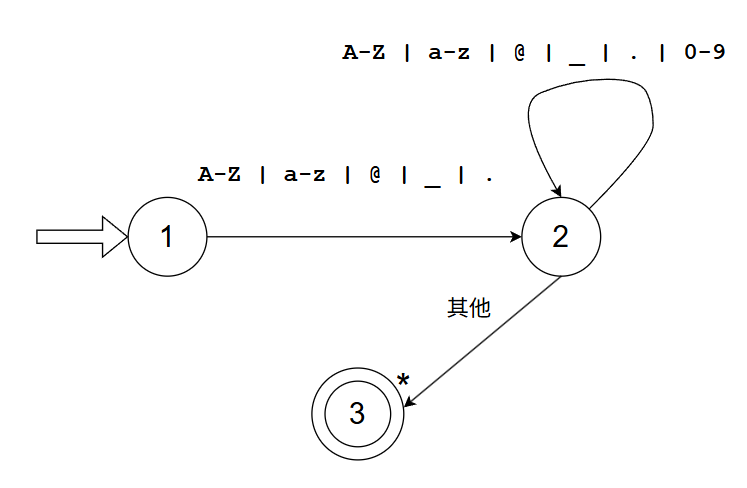
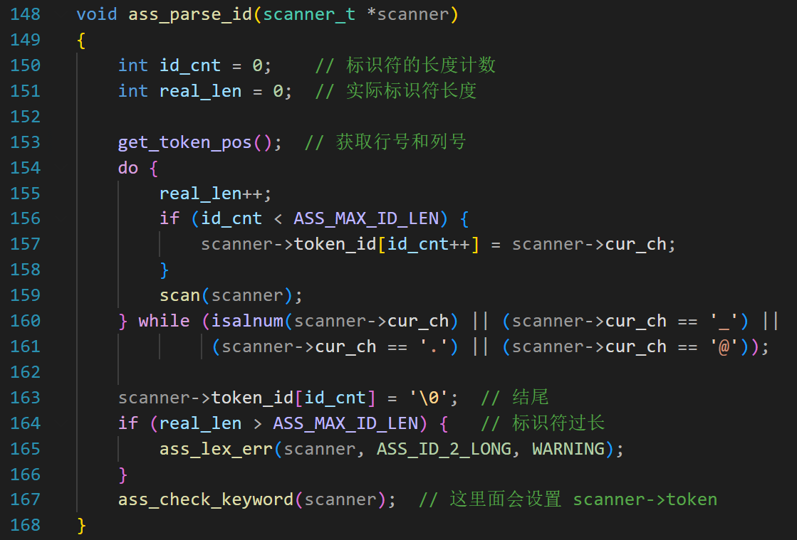
第 167 行，检查标识符是不是关键字。
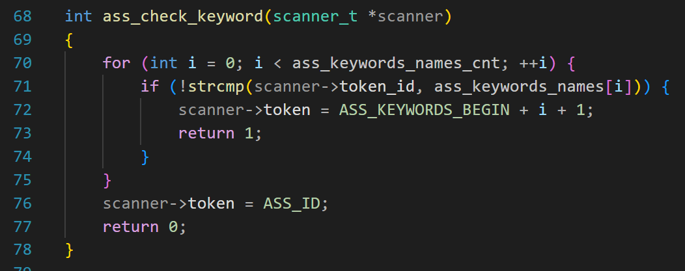
把标识符（在 scanner->token_id 中）和 ass_keywords_names 数组里面字符串逐一比较，发现匹配说明是关键字，并且设置 scanner->token 为对应的枚举成员。
对于数字常量，我们仅考虑十进制非负整数，如果整数前面有正号或者负号，到了语法分析阶段再处理。
对于字符串常量，由于汇编语言使用了数字代替不可打印的字符，所以不用考虑转义字符。
第 356 行，我们调用 ass_parse_other_syms 来处理标识符、数字以外的字符或者字符串。
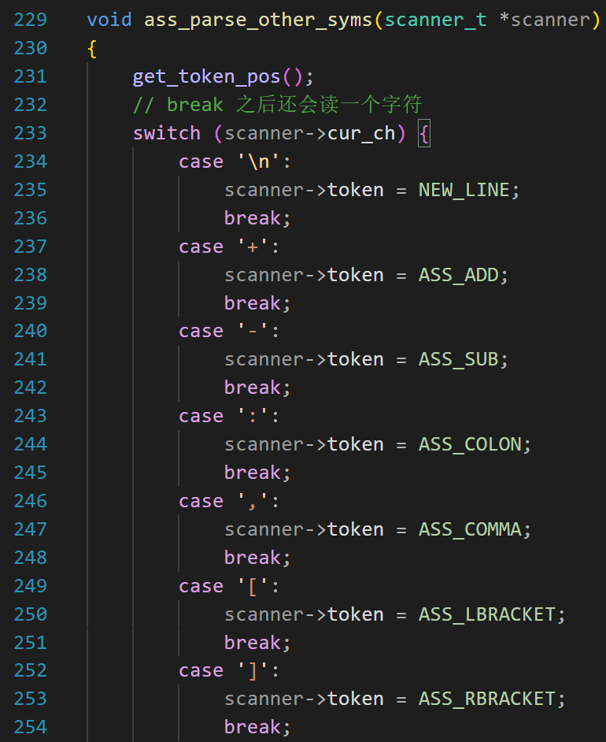
需要注意的是换行，NASM 是一种面向行的汇编器。换行符的主要作用是结束当前的指令或声明。
- 在 C 语言中，你用分号
;结束语句，所以你可以把所有代码写在一行。 - 在 NASM 中，一行通常只能有一条指令。换行符告诉汇编器：“这条
mov指令到此结束，下一行是新的开始。”
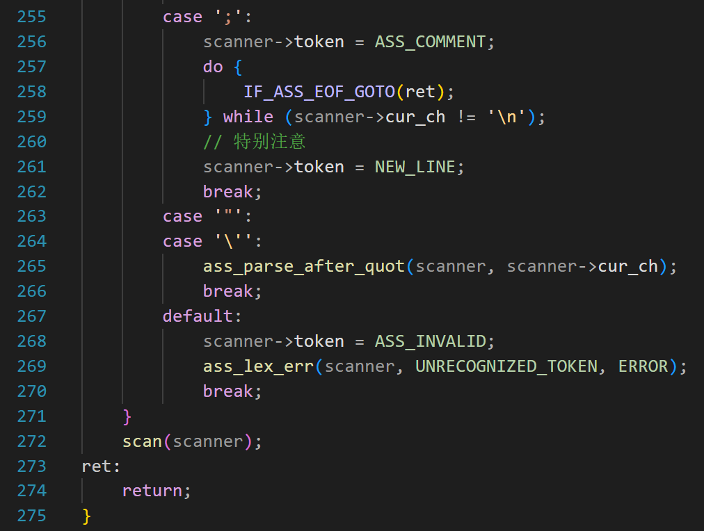
对于注释的处理，和 c 的单行注释有点不同。
第 258 行，是一个带参数的宏
1 | |
如果遇到的文件末尾，则 goto 到第 273 行。
第 259 表示一直 scan,直到遇到换行。
第 261，一定要给当前词法记号标记为 NEW_LINE(换行)
不然语法分析的时候，会认为这行汇编指令缺少换行而报错。
第 263 和 264 分别是双引号和单引号，我们看 ass_parse_after_quot 函数。
在 C 语言中，字符串要用双引号包裹，单个字符要用单引号包裹；
但是在 nasm 中，不管是字符还是字符串，都可以用双引号或单引号包裹。
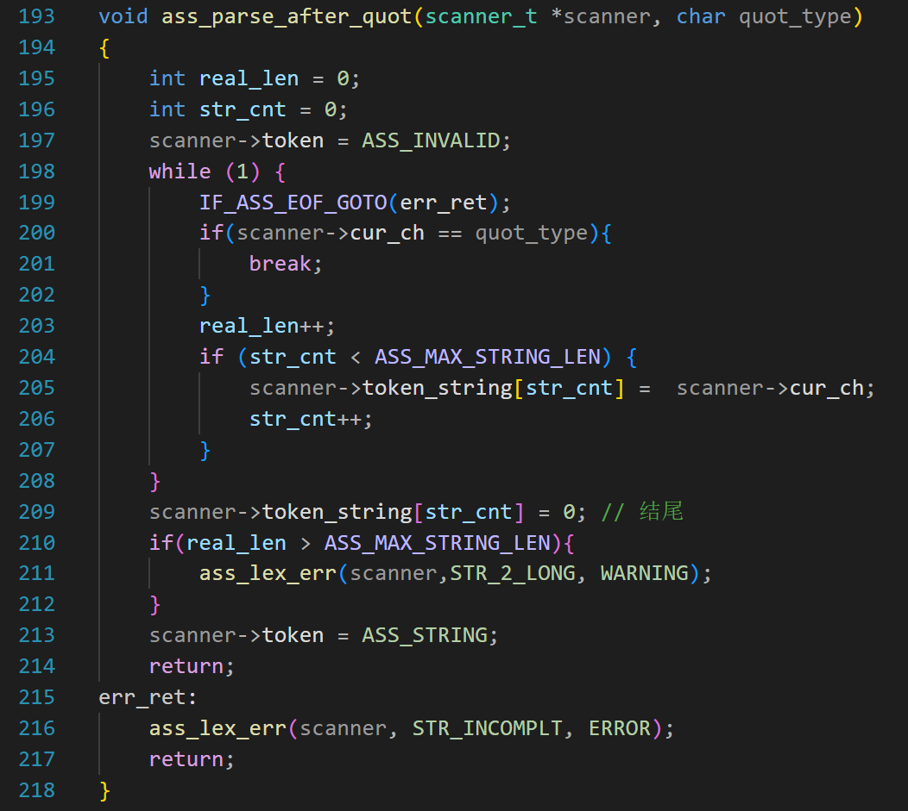
第 201 行，如果当前读出的字符是单引号或者双引号（和参数 quot_type 匹配）则跳出循环，否则把字符保存在 token_string 数组中；
第 209 行，用 0 来结束字符串；
第 214，如果仅有 1 个字符，就用数字常量来表示，因为字符的本质是小整数；我们之前定义的枚举类型 ASS_CHARA 根本用不上，可以删除。如果大于 1 个字符，则用字符串表示。
到这里，汇编器的词法分析就完成了。因为有之前的基础，所以新内容不多。
成果展示
那就来个词法着色吧。
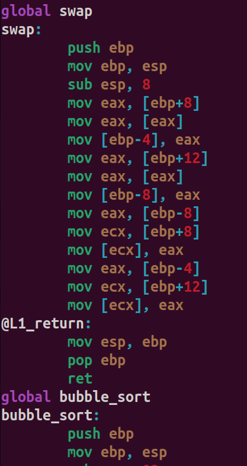
本文到这里就结束了，下节课我们学习汇编器的语法分析。